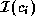
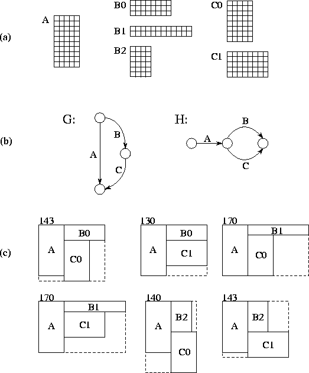
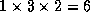
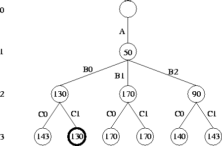
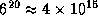
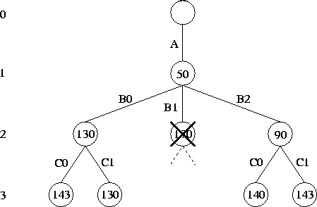
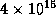
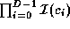
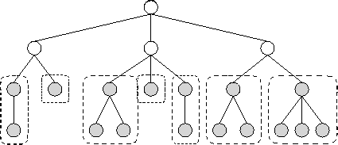

![[DBPP]](pictures//asm_color_tiny.gif)


![[Search]](pictures//search_motif.gif)
Our second case study is an example of a highly irregular, symbolic problem. The solution that we develop incorporates a task scheduling algorithm.
VLSI is a process used to build electronic components such as microprocessors and memory chips comprising millions of transistors. The design of VLSI components is a computationally demanding process. Computers are used extensively to verify the correctness of a circuit design, to lay out a circuit in a two-dimensional area, and to generate the patterns used to test circuits once they have been fabricated. Many of these problems involve either an exhaustive or a heuristically guided search of a large space of possible solutions. Here, we consider a layout problem. The first stage of the VLSI design process typically produces a set of indivisible rectangular blocks called cells. In a second stage, interconnection information is used to determine the relative placements of these cells. In a third stage, implementations are selected for the various cells with the goal of optimizing the total area. It is the third stage, floorplan optimization, for which we shall develop a parallel algorithm. This is an important part of the design process, since the cost of a chip is usually dominated by its area.
VLSI floorplan optimization can be explained by analogy with the problem of designing a kitchen. Assume that we have decided on the components the kitchen is to contain (this action is stage 1 of the VLSI design process) and how these components are to be arranged (stage 2). For example, we may wish to have a stove, refrigerator, table, and sink and may require that the stove be next to the refrigerator and the table next to the sink. Assume also that we can choose among several possible models for each of these components, with different models having different shapes but occupying the same floor area. In the floorplan optimization phase of our kitchen design, we select models so as make the best use of available floorspace.
In VLSI, a floorplan is represented as a pair of polar graphs, conventionally called the and graphs. (A polar graph is a directed acyclic graph with a single source and a single sink. The term directed means that edges have a direction, and acyclic means that there are no cycles.) These graphs specify which cells are adjacent in the vertical and horizontal directions, respectively. Each arc denotes a cell, and nodes (other than the source and sink) link cells that must have touching edges.
Although a cell has a fixed area, it may have several possible implementations with different aspect ratios. If we have N cells, and if cell has  implementations, then the total number of possible floorplan configurations is
For example, Figure 2.27 shows a floorplan optimization problem with three cells and six possible configurations.

Figure 2.27: A floorplan optimization problem. The three cells A, B, and C,
have 1, 3, and 2 implementations each, respectively. In (a) are the
alternative implementations. In (b) are the and
graphs, which state that B must be above C, and that A must be to the
left of B and C, respectively. In (c) are the 
alternative floorplans that satisfy the constraints; each is labeled
with its area. The lowest area floorplan is constructed from A, B0,
and C1 and has an area of 130.

Figure 2.28: Solving a floorplan optimization problem. This
is the search tree corresponding to the problem illustrated in Figure
2.27. Level 0 is the root. At level 1, an implementation has been
chosen for A; the three level 2 subtrees represent the choices for B
and the level 3 leaves the choices for C. The number in each tree
node represents the area of the associated (partial) solution. The
optimal configuration is (A,B0,C1) and has area
130.
The problem then is to identify the configuration with the lowest area, where area is defined as the product of the maximum horizontal and vertical extents. This identification can be achieved by using a search algorithm to explore a search tree representing all possible configurations. As shown in Figure 2.28, level i of this tree corresponds to the situation in which implementations have been chosen for i cells. We can explore this search tree by using Algorithm 1.1. An initial call search(root) causes the entire tree to be visited, with the path used to get to each leaf node reported as a solution.
Algorithm 1.1 implements an exhaustive search that visits all nodes of the search tree. Unfortunately, this strategy is computationally infeasible for any but the smallest problems. For example, a problem with just 20 cells and 6 implementations per cell has a search space of  nodes. Fortunately, the number of nodes explored can be reduced considerably by using a technique called branch-and-bound search. The basic idea is to keep track of the best (lowest area) solution found so far. Before ``expanding'' a node (that is, looking at its subtrees), we check whether the area of the partial configuration represented by that node is already greater than that of the best known solution. If so, we know that this node cannot yield a better solution, and the subtree rooted at that node can be abandoned, or pruned (Figure 2.29). This approach is specified as Algorithm 2.2, with the global variable A used to maintain a record of the best solution.

Figure 2.29: Branch-and-bound search. This figure shows the nodes actually
explored in the example problem, assuming a depth-first and
left-to-right search strategy. The subtree rooted at the second node
on level 2 is pruned because the cost of this node (170) is greater
than that of the cheapest solution already found
(130).
On a sequential computer, the foreach in Algorithm 2.2 can examine each subtree in turn, thereby giving a depth-first search algorithm that explores the tree depth-first and left-to-right. In this case, pruning can reduce the number of nodes explored enormously. In one experiment reported in the literature, the number of nodes explored in a typical 20-cell problem was reduced from  to . As we shall see, efficient pruning is a difficult problem in a parallel environment and, to a large extent, determines the structure of our parallel algorithm.
In summary, the fundamental operation to be performed in the floorplan optimization problem is branch-and-bound search. This is an interesting algorithm from a parallel computing perspective because of its irregular computational structure: the size and shape of the search tree that must be explored are not known ahead of time. Also, the need for pruning introduces a need both to manage the order in which the tree is explored and to acquire and propagate global knowledge of computation state. In these respects this problem is typical of many algorithms in symbolic (nonnumeric) computing.
Algorithm 2.2, like Algorithm 1.1, has no obvious
data structure to which we can apply domain decomposition techniques.
Hence, we use a fine-grained functional decomposition in which each
search tree node is explored by a separate task. As noted earlier,
this means that new tasks will be created in a wavefront as the search
progresses down the search tree, which will tend to be explored in a
breadth-first
fashion. Notice that only tasks on the
wavefront can execute concurrently. We also need to address the issue
of how to manage the A
 value, which must be accessed by
all tasks. For now, we assume that it is encapsulated in a single
task with which other tasks will communicate.
value, which must be accessed by
all tasks. For now, we assume that it is encapsulated in a single
task with which other tasks will communicate.
A quick review using the design checklist of Section 2.2.3 reveals one deficiency in this design. The breadth-first exploration strategy is likely to decrease performance dramatically by delaying discovery of solution nodes and hence reducing the amount of pruning that occurs, thereby leading to considerable redundant computation. We must bear this issue in mind in subsequent design phases.
In a parallel implementation of simple search
(Algorithm 1.1), tasks can execute independently and need
communicate only to report solutions. In contrast, branch-and-bound
search requires communication during execution in order to obtain and update
the search bound A
 . In designing a communication
structure to achieve this goal, we need to trade off the benefits of
frequent accesses to a centralized A
value (which tends
to reduce the amount of the search tree that must be explored) against
communication costs.
. In designing a communication
structure to achieve this goal, we need to trade off the benefits of
frequent accesses to a centralized A
value (which tends
to reduce the amount of the search tree that must be explored) against
communication costs.
One approach is to encapsulate responsibility for maintaining
A
 in a centralized task, with which each task
communicates when a solution is produced or a bound is required. This
approach is simple and may even be efficient if communication is
cheap, evaluating a node is expensive, and the number of
processors is not too large. However, the centralized approach is
inherently nonscalable.
Since the manager must take a certain amount
of time to process a request, the maximum rate at which it can service
requests, and hence the maximum number of tasks that can execute
concurrently, is bounded.
in a centralized task, with which each task
communicates when a solution is produced or a bound is required. This
approach is simple and may even be efficient if communication is
cheap, evaluating a node is expensive, and the number of
processors is not too large. However, the centralized approach is
inherently nonscalable.
Since the manager must take a certain amount
of time to process a request, the maximum rate at which it can service
requests, and hence the maximum number of tasks that can execute
concurrently, is bounded.
Various refinements to this centralized scheme can be imagined. We
can modify Algorithm 2.2 to check A
 only
periodically, for example when a depth counter incremented on each
recursive call is an integer multiple of a specified frequency
parameter. Or, we can partition the tree into subtrees, each with its
own A
only
periodically, for example when a depth counter incremented on each
recursive call is an integer multiple of a specified frequency
parameter. Or, we can partition the tree into subtrees, each with its
own A
 submanager, and organize periodic exchanges of
information between these submanagers. For example, submanagers can
perform broadcast operations when they discover significantly better
solutions.
submanager, and organize periodic exchanges of
information between these submanagers. For example, submanagers can
perform broadcast operations when they discover significantly better
solutions.
In the agglomeration phase of the design process we start to address practical issues relating to performance on target computers. In the floorplan optimization problem, this means we must address two potential deficiencies of the fine-grained algorithm that we have developed. The first will be familiar from earlier problems, that is, the cost of creating a large number of fine-grained tasks. This can be addressed using agglomeration, unless we believe that node evaluation is sufficiently expensive and task creation sufficiently cheap for the fine-grained algorithm to be efficient. For example, we can create one task for each search call in the foreach statement of Algorithm 2.2 until we reach a specified depth in the tree, and then switch to a depth-first strategy, thereby creating a single task that evaluates search calls in sequence (Figure 2.30). If the switch to depth-first search is performed at depth D and cell has implementations, then in the absence of pruning this technique creates  tasks.

Figure 2.30: Increasing granularity in a search problem. In this
figure, we agglomerate by switching to a sequential search at level
two in the search tree. A task is created for each subtree rooted at
level two.
The second potential deficiency is more subtle and relates to the scheduling of tasks rather than to their creation. In the absence of explicit programmer control, we can assume that the tasks created to evaluate search tree nodes will execute either in the order that they are created or perhaps in a random order. In either case, the search tree tends to be explored in a breadth-first fashion. This is undesirable because it tends to reduce the effectiveness of pruning and hence cause redundant computation. The solution to this problem is to control the order in which search tree nodes are explored. That is, we must implement a task-scheduling algorithm. Because this is really a mapping issue, we discuss it under ``Mapping.''
Recall that when we use a task-scheduling strategy, tasks (search tree nodes) become ``problems'' to be executed by one of a smaller number of ``worker'' tasks, typically one per processor. Workers generate new search problems as they expand nodes, and request new search problems each time they complete previously assigned problems. Requests can be handled using a centralized or decentralized strategy.
We can imagine a variety of alternative task-scheduling schemes for the floorplan optimization problem. One approach works in conjunction with the agglomeration scheme of Figure 2.30. A central manager first constructs a number of coarse-grained tasks, by exploring the search tree to depth D . These tasks are then assigned to idle workers in a demand-driven manner. Because each task can be represented by a short vector representing the path taken to its position in the tree, the data movement costs associated with this scheme are not high. Furthermore, because each processor executes one subtree at a time in a depth-first fashion, pruning is effective.
An interesting variant of this approach combines elements of both redundant work and cyclic mapping to avoid the need for a central manager. Every worker expands the tree to depth D . Then, each worker takes responsibility for a disjoint subset of the tasks generated. (This subset could be identified using a cyclic allocation strategy, for example.) Only if a worker becomes idle does it ask other workers for tasks.
A third strategy, more complex but also more general, is initially to allocate the root node to a single worker. Load balancing is then achieved by causing workers with empty queues to request problems from other workers. Each worker can then enforce a local depth-first search strategy, and hence increase the amount of pruning, by ordering its queue of search problems according to their depth in the tree. This method allows the worker to select problems far from the root for local execution and problems nearer to the root to hand to other workers.
Our choice of task scheduling strategy will depend on characteristics
of our problem and target computer and can be determined by analysis
and experiment. Notice that the communication structures used for
task scheduling can be integrated with those proposed earlier for
maintaining A
 . For example, a central manager used for
task scheduling can also maintain and distribute an up-to-date search
bound with each task. In decentralized schemes, the worker tasks that
execute search problems can broadcast improved search bound values to
other workers.
. For example, a central manager used for
task scheduling can also maintain and distribute an up-to-date search
bound with each task. In decentralized schemes, the worker tasks that
execute search problems can broadcast improved search bound values to
other workers.
The parallel algorithm designed in this case study is certainly more
complex, and perhaps less obvious, than that developed for the
atmosphere model. It is clear from the start that functional
decomposition techniques should be used to define tasks, that
responsibility for maintaining A
 should be isolated from
the rest of the computation, and that we can increase task granularity
by switching from a parallel to a sequential evaluation strategy at a
specified depth in the search tree. If we were concerned with
parallelizing simple search, the design might be complete at this
stage. However, the need to support pruning requires that we proceed
with further refinements. In particular, we introduce a
task-scheduling algorithm so that we can pursue depth-first search on
each processor while exposing higher-level search tree nodes for idle
workers.
should be isolated from
the rest of the computation, and that we can increase task granularity
by switching from a parallel to a sequential evaluation strategy at a
specified depth in the search tree. If we were concerned with
parallelizing simple search, the design might be complete at this
stage. However, the need to support pruning requires that we proceed
with further refinements. In particular, we introduce a
task-scheduling algorithm so that we can pursue depth-first search on
each processor while exposing higher-level search tree nodes for idle
workers.
© Copyright 1995 by Ian Foster